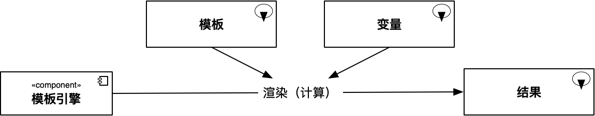

简介


peacetrue-template 是一个基于 Java 的目录模板引擎组件，用于渲染指定目录下的一套模板。
2. 原理
模板引擎的工作原理如下：

当模板引擎为常规模板引擎时，模板通常为单个文件，结果也为单个文件； 当模板引擎为目录模板引擎时，模板会包含多个文件，结果也包含多个文件，此时模板可称为目录模板。 目录模板引擎会使用常规模板引擎依次渲染目录模板中的多个文件。
4. 前提
目录模板引擎基于 Java 开发，使用时要求系统上具有 Java 运行环境，版本在 1.8 及以上。可使用如下命令检查：
java
$ java -version
java version "1.8.0_51"
Java(TM) SE Runtime Environment (build 1.8.0_51-b16)
Java HotSpot(TM) 64-Bit Server VM (build 25.51-b03, mixed mode)5. 特性
已实现
-
支持渲染目录模板
-
支持命令行模式（依赖 JRE）
待实现
-
支持基于 GraalVM 的原生命令行模式（不依赖 JRE）